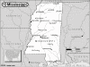

Mississippi

Attention: If you use this or any of
the AIRS lists in any state, please report any bad phone numbers or emails to
the webmaster. This is the
responsibility of all users, including you. Thank you!
Shawn Clark
EMAIL: firefly_at_jam_dot_rr_dot_com
CROSSROADS: I-55 and I-20
CITY: Jackson
ZIP CODE: 39212
PHONE: 601-953-5275
VW'S: 84 Westy
AVAILABLE: Not after 9 PM or before 8AM
I am familiar with: 1600, fuel injection, type4 engine, conversions
I CAN PROVIDE THE FOLLOWING SERVICES:
INTERNET ACCESS
TOOLS
TELEPHONE ACCESS
TRANSPORTATION HELP
MECHANICAL HELP
SPACE TO WORK ON BUS
SOME PARTS
COFFEE/TALK
CAMPING: 2 nights
SPARE ROOM: 1 night
Favorite beer type: Room temp will do.
Frank Stroupe
(fstroupe@ebicom.net)
CROSSROADS: US 78 between Tupelo and Holly Springs, MS
Myrtle, 38650
PHONE: 662-988-2407
VW'S: '77 bus at this time
COMMENTS: I live appx 40 miles from intersection of Hwy 78 and Natchez Trace (Tupelo), if
you need help, I'll do what I can. Live 4 miles from hwy 78, at Myrtle, MS. I live in the
"sticks" so if you need a place to park camper, no problem. Have some tools
(what I haven't lost or lent)Have worked on most type VW engines, but mostly a long time
ago. Haven't been back into them long enough to have accumalated any parts. A friend of a
friend owns a Foreign AP store in Tupelo that carries VW stuff, but very little for buses,
no 2L at all. Don't own a Westy, so if that's your only interest, I don't have one for you
to admire. Sorry, no spare room, house is much too small now. If are broken
down for long term, should be able to find somewhere to park bus for at least a few days,
if close enough to my house to get it here, can leave for as long as you need. WARNING-if
emergency, I use answering machine to screen calls, and it is usually set to four
rings-please speak clearly and slo!
wly, explain your situation, don't hang up so fast because we may be standing there
figuring out what the call is about. You may want to call back immediately, if you're not
out of change.
AVAILABLE: Mon-thu 4pm-8pm (emergencies only, I get up for work at 230 am) Fri-Sun
anytime.
familiar with: 1200, 1300, 1500, 1600, type4 engine
I CAN PROVIDE THE FOLLOWING SERVICES:
INTERNET ACCESS
TOOLS
TELEPHONE ACCESS
TRANSPORTATION HELP
MECHANICAL HELP
SPACE TO WORK ON BUS
STORAGE SPACE
COFFEE/TALK
CAMPING SPOT: 2 nights
Sam Weissel
(sww67@hotmail.com)
CROSSROADS: Hey 82 & hwy 45
Columbus, 39702
PHONE: 662-329-3612
VW'S: 1973 Bay Window
AVAILABLE:
Just give me a try, if I'm here I will do anything I can to help. If you get the
machine, leave a message, I may be here and will pick up
familiar with: 1600, dual carbs, type4 engine
I CAN PROVIDE THE FOLLOWING SERVICES:
INTERNET ACCESS
TOOLS
TELEPHONE ACCESS
TRANSPORTATION HELP
MECHANICAL HELP
COFFEE/TALK
Favorite beer type: Anything cold
Brian
(ballenvw@hotmail.com)
CROSSROADS: I-10 + HWY 57,613,63
Pascagoula, 39567
PHONE: 228 769 8701
VW'S: 1971 Bus
AVAILABLE: I check my answering machine several times a day and my email twice a week
familiar with: 1600
I CAN PROVIDE THE FOLLOWING SERVICES:
INTERNET ACCESS
TOOLS
TELEPHONE ACCESS
TRANSPORTATION HELP
MECHANICAL HELP
SPACE TO WORK ON BUS
STORAGE SPACE
PARTS AVAILABLE
COFFEE/TALK
CAMPING SPOT
Favorite beer type: Beer is for wimps!
John Brogan
(leeroy@netdoor.com)
CROSSROADS: I59, Hwy 49 & Hwy 98
Hattiesburg, 39401
PHONE: (601)544-0739
VW'S: 79 Bus (fuel injected)
COMMENTS: Fair mechanic, new to VW's. Just bought the 79 bus (1st VW)Can provide a tow if
needed. Plenty of space and tools. I work 8-5, Monday thru Friday, off weekends and
usually home.
I CAN PROVIDE THE FOLLOWING SERVICES:
INTERNET ACCESS
TOOLS
TELEPHONE ACCESS
TRANSPORTATION HELP
MECHANICAL HELP
SPACE TO WORK ON BUS
STORAGE SPACE
COFFEE/TALK
CAMPING SPOT: 2 nights
Favorite beer type: Anything cold
David Holifield
(rainman3k@aol.com)
CROSSROADS: I55 and I20, Natchez Trace and I20
Clinton (borders Jackson), 39056
PHONE: (601)925-4146
VW'S: '67 Beetle, '71 Super Beetle (now my sister's)
COMMENTS: I know quite well what a breakdown feels like, and I'll do whatever I can if
you're in a tough spot.
AVAILABLE: I'm out of class by 3 every weekday, but my exciting fast food schedule varies
familiar with: 1500, 1600
I CAN PROVIDE THE FOLLOWING SERVICES:
INTERNET ACCESS
TOOLS
TELEPHONE ACCESS
TRANSPORTATION HELP
MECHANICAL HELP
SPACE TO WORK ON BUS
STORAGE SPACE
SPARE ROOM: 1 night
Kevin Traylor
(kevint77@yahoo.com)
Hattiesburg, 39402
PHONE: 601-296-1408
VW'S: 1966 Bug
COMMENTS:
My mechanical knowledge of VW's is limited, but I have manuals, and know excellent
mechanics in town.
I have a few tools, but can borrow alot more.
AVAILABLE: Monday to Friday after 4, anytime on weekends usually
familiar with: 1600
I CAN PROVIDE THE FOLLOWING SERVICES:
INTERNET ACCESS
TOOLS
TELEPHONE ACCESS
TRANSPORTATION HELP
MECHANICAL HELP
SPACE TO WORK ON BUS
COFFEE/TALK
CAMPING SPOT: 2 nights
Favorite beer type: Anything cold
jamie sturgeon
(adudehere@hotmail.com)
CROSSROADS: exit 206 interstate 55- 100 miles between Memphis, TN and Jackson , MS
Grenada, 38901
PHONE: (662)226-7149
VW'S: 1969 Beetle (bug) you know
COMMENTS: Im just cool, come chill.
AVAILABLE: just try to catch me, i have a roommate, he is almost as cool as me.
I CAN PROVIDE THE FOLLOWING SERVICES:
INTERNET ACCESS
TELEPHONE ACCESS
TRANSPORTATION HELP
COFFEE/TALK
CAMPING SPOT: 4 nights or more
SPARE ROOM:: 2 nights
Favorite beer type: Commercial brands
ray stewart
CROSSROADS: 6w &9s
pontotoc, 38863
PHONE: 662 489 6942
ONLY CALL IF EMERGENCY:
VW'S: 71&76 campers,74 things.type 1's
COMMENTS: most any parts or tools,inside work space,welding/torch available,not a party
type, not a cool dude, but willing to help you.
AVAILABLE: in and out ,here most of the time
I am familiar with: Bastard40hp, 1200, 1300, 1500, 1600, 1776+, dual carbs, type4 engine
I CAN PROVIDE THE FOLLOWING SERVICES:
INTERNET ACCESS
TOOLS
TELEPHONE ACCESS
TRANSPORTATION HELP
MECHANICAL HELP
SPACE TO WORK ON BUS
STORAGE SPACE
SOME PARTS
CAMPING: 4 nights or more
SPARE ROOM: 3 nights
David Odenwald
EMAIL: djodie@aol.com
CROSSROADS: I-20 and Hwy 43
CITY: Pelahatchie, 39145
PHONE: 601-546-2656
VW'S: 1966 Beetle, 1966 Karmann Ghia, 1971 Karmann Ghia
COMMENTS: Neophyte about VWs. Relearning things. Do have the major manuals for
the Type 1s. Even a Chilton for Type 3s. Plus a few special tools.
AVAILABLE: Call anytime. Might get me or will hear a beep, leave message.
I am familiar with: 1300, 1600
I CAN PROVIDE THE FOLLOWING SERVICES
INTERNET ACCESS
TOOLS
TELEPHONE ACCESS
TRANSPORTATION HELP
MECHANICAL HELP
STORAGE SPACE
SOME PARTS
COFFEE/TALK
CAMPING: 1 night
SPARE ROOM: 1 night
Favorite beer type: I don't drink
Sherry and Levi
EMAIL: beetlelove66@hotmail.com
CROSSROADS: Hwy 98/Hwy 49/Hwy13
CITY: Brooklyn, 39425
PHONE: 601-543-0402
VW'S: 66 Beetle/75 Bus
COMMENTS: I Love VW's and VW people!! I live near Desoto National Forest!! Just learning
about dual carbs on my 1800cc.
AVAILABLE: I work 9-5 m-f, but am usually reachable!
I am familiar with: 1600, dual carbs
I CAN PROVIDE THE FOLLOWING SERVICES
INTERNET ACCESS
TOOLS
TELEPHONE ACCESS
TRANSPORTATION HELP
MECHANICAL HELP
SPACE TO WORK ON BUS
STORAGE SPACE
COFFEE/TALK
CAMPING: 1 night
SPARE ROOM: none
Favorite beer type: Anything cold
Derek
EMAIL: dwh1_at_msstate_dot_edu
CROSSROADS: 1-82 and oktoc road
CITY: Starkville
PHONE: 662-324-1376
ONLY CALL IF EMERGENCY
VW'S: 1978 Campmobile
AVAILABLE: Random times
I CAN PROVIDE THE FOLLOWING SERVICES
TELEPHONE ACCESS
TRANSPORTATION HELP
SPACE TO WORK ON BUS
CAMPING: 1 night
SPARE ROOM: 1 night
Favorite beer type: Micro brands
Bob Worth
EMAIL: bobmworth_at_yahoo_dot_com
CROSSROADS: I-10 and U.S. 49
Long Beach, 39560
VW'S: 1977 Camper
COMMENTS: I'm out of town fairly often, so email prior to departure!
AVAILABLE: It varies!
I CAN PROVIDE THE FOLLOWING SERVICES
INTERNET ACCESS
TOOLS
TELEPHONE ACCESS
TRANSPORTATION HELP
SPACE TO WORK ON BUS
COFFEE/TALK
CAMPING: 2 nights
SPARE ROOM: none
Favorite beer type: Anything cold
Phil Eide
EMAIL: peide_at_ecd_dot_org
CROSSROADS: I-55 and I-20
CITY: Jackson
ZIP CODE: 39216
PHONE: 601-672-2760
VW'S: '77 westy
AVAILABLE: whenever.
I am familiar with: 1500, 1600, 1776+
I CAN PROVIDE THE FOLLOWING SERVICES:
INTERNET ACCESS
TOOLS
TELEPHONE ACCESS
TRANSPORTATION HELP
MECHANICAL HELP
SPACE TO WORK ON BUS
STORAGE SPACE
SOME PARTS
COFFEE/TALK
CAMPING: 2 nights
SPARE ROOM: 2 nights
Favorite beer type: Micro brands
Mark Guest
EMAIL: Jazz_at_MarkGuest_dot_net
CROSSROADS: I-10 & 603
CITY: Waveland
ZIP CODE: 39576
PHONE: 228-466-0260
ONLY CALL IF EMERGENCY
VW'S: 68 Westy
AVAILABLE: 8am-8pm
I am familiar with: 1600
I CAN PROVIDE THE FOLLOWING SERVICES
INTERNET ACCESS
TOOLS
TELEPHONE ACCESS
TRANSPORTATION HELP
SPACE TO WORK ON BUS
CAMPING: 2 nights
SPARE ROOM: none
Favorite beer type: Thick and chewy
Chris Wansley
EMAIL: chanbrhama_at_comcast_dot_net
CROSSROADS: I-20/I-59
CITY: Meridian, 39305
PHONE: 601.482.7995
VW'S: '69 Sunroof Beetle / '62 Beetle Convertible
COMMENTS: I have some basic mechanical skills, a decent place to work and a few
tools. Will do what I can to help out a fellow VW owner or at least try to
point you to someone who can help.
AVAILABLE: Call anytime and check but generally available M-F after 5:30PM and
most weekends unless traveling.
I am familiar with: 1500, 1600
I CAN PROVIDE THE FOLLOWING SERVICES
TOOLS
TELEPHONE ACCESS
MECHANICAL HELP
SPACE TO WORK ON BUS
CAMPING: 1 night
SPARE ROOM: none
Favorite beer type: Anything cold
Cameron
EMAIL: cameron_dot_leonard_at_msmeri_dot_ang_dot_af_dot_mil
CROSSROADS: I20/I59 split
CITY: Meridian, 39305
PHONE: (601) 604-2321
ONLY CALL IF EMERGENCY
VW'S: '68 Crewcab, '63 356B, various LBC's MG, TR, etc...
COMMENTS: I live in Auburn, AL on the weekends. I work in Meridian, MS
during the week. That's a difference of 225 miles. I usually make
that commute in, Moonlander 7, my crewcab via I20 from MS to AL, US80 from the
stateline to Montgomery, and I85 from Montgomery to Auburn.
AVAILABLE: 24/7
I am familiar with: 1600
I CAN PROVIDE THE FOLLOWING SERVICES
TOOLS
TELEPHONE ACCESS
TRANSPORTATION HELP
MECHANICAL HELP
SOME PARTS
CAMPING: none
SPARE ROOM: none
Favorite beer type: Anything cold
Kevin
EMAIL: kevin77westy_at_yahoo_dot_com
CROSSROADS: I-10 and Hwy 609
CITY: Ocean Springs
ZIP CODE: 39565
PHONE: 850-591-9004
VW'S: 1977 Westy, 1965 Camper, 1959 Beetle, 1974 Thing
I am familiar with: 36hp, 1500, 1600, fuel injection, type4 engine
I CAN PROVIDE THE FOLLOWING SERVICES:
INTERNET ACCESS
TOOLS
TELEPHONE ACCESS
TRANSPORTATION HELP
MECHANICAL HELP
SPACE TO WORK ON BUS
STORAGE SPACE
SOME PARTS
COFFEE/TALK
CAMPING: 2 nights
SPARE ROOM: none
Favorite beer type: Anything cold
volkswitt
EMAIL: witt377_at_bellsouth_dot_net
CROSSROADS: I55 @ I20 (45 mi N)
CITY: pickens
ZIP CODE: 39146
PHONE: 662-468-0230
VW'S: 71 westy & 67 Kombi
AVAILABLE: i work week on week off
I am familiar with: 1500, 1600, 1776+
I CAN PROVIDE THE FOLLOWING SERVICES
INTERNET ACCESS
TOOLS
TELEPHONE ACCESS
MECHANICAL HELP
SPACE TO WORK ON BUS
STORAGE SPACE
COFFEE/TALK
CAMPING: 3 nights
SPARE ROOM: 2 nights
Favorite beer type: I don't drink
Josh
EMAIL: joshuaocook_at_hotmail_dot_com
CROSSROADS: Hwy 90
CITY: Ocean Springs
ZIP CODE: 39564
PHONE: 228-369-0548
VW'S: 78 Westy, 68 T3
COMMENTS: Short on space, but will help where I can. Im usually good for a
ride.
AVAILABLE: Variable. Available in an emergency
I am familiar with: 1600, type4 engine
I CAN PROVIDE THE FOLLOWING SERVICES
TOOLS
TELEPHONE ACCESS
TRANSPORTATION HELP
MECHANICAL HELP
SOME PARTS
CAMPING: none
SPARE ROOM: none
Favorite beer type: Anything cold
Harry Smith
EMAIL: ev1lbastard_at_yahoo_dot_com
CROSSROADS: Pass Road & Courthouse Road
CITY: Gulfport
ZIP CODE: 39507
VW'S: 1974 Beetle, 1976 Bus dead in garage
COMMENTS: I work as a merchant mariner and am away at sea about 4 to 6 months a
year. When I'm not working I am available at almost all hours. Only
one way to find out.
I am familiar with: 1600, fuel injection, diesel
I CAN PROVIDE THE FOLLOWING SERVICES
INTERNET ACCESS
TOOLS
TELEPHONE ACCESS
TRANSPORTATION HELP
MECHANICAL HELP
SPACE TO WORK ON BUS
COFFEE/TALK
CAMPING: none
SPARE ROOM: none
Favorite beer type: Thick and chewy
Ben
EMAIL: Bengavinb20_at_gmail_dot_com
CROSSROADS: Three Rivers Rd, Oniel
CITY: Gulfport, 39503 PHONE: 8598668744
VW'S: 73 Bug (bid bird yellow)
COMMENTS: Just got into the aircooled scene, however i have a basic knowledge
and work with tons of mechanics at the navy base.
AVAILABLE: mon-fri 4pm-10pm weekends all day
I am familiar with: 1500/1600
I CAN PROVIDE THE FOLLOWING SERVICES
INTERNET ACCESS
TOOLS
TELEPHONE ACCESS
TRANSPORTATION HELP
MECHANICAL HELP
COFFEE/TALK
CAMPING: none
SPARE ROOM: none
Favorite beer type: Anything cold
{kind=link}